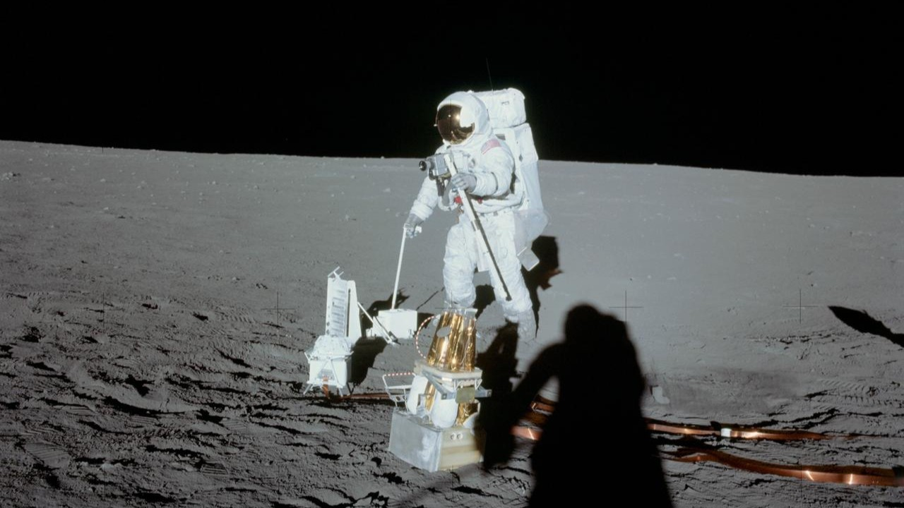
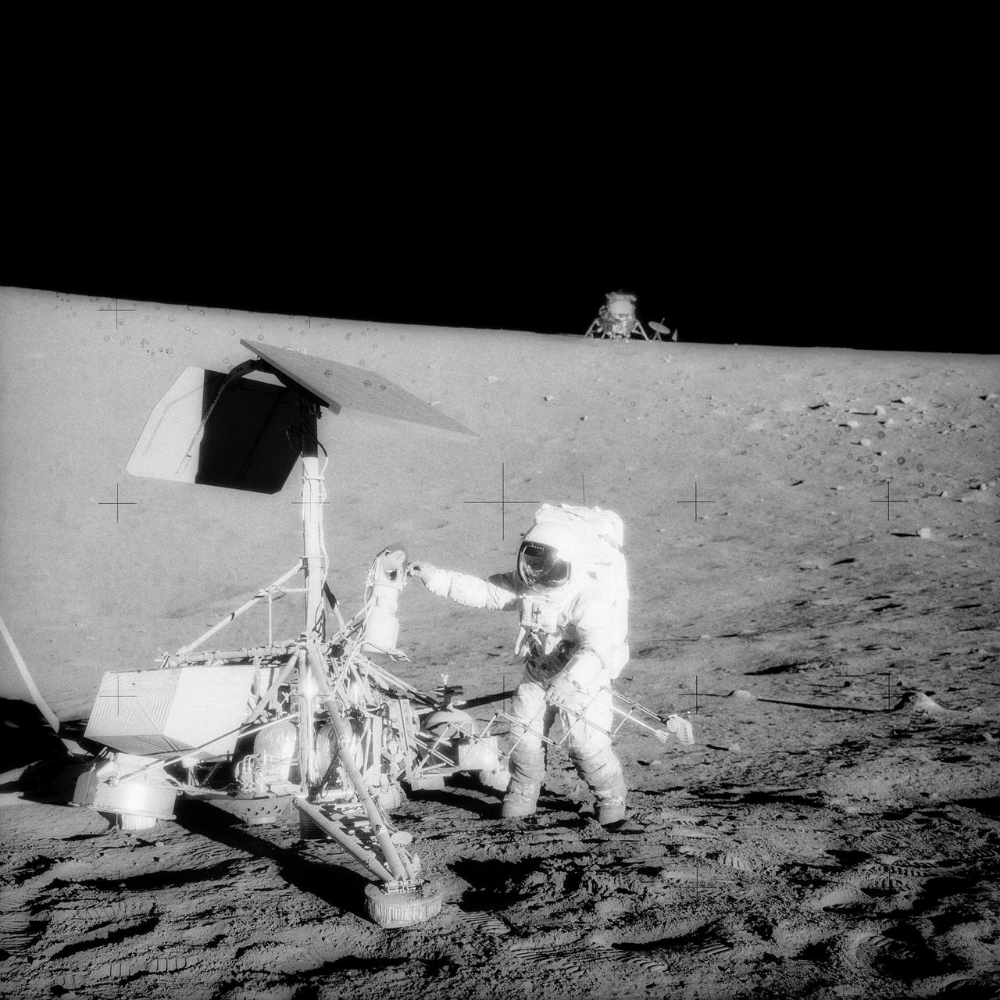
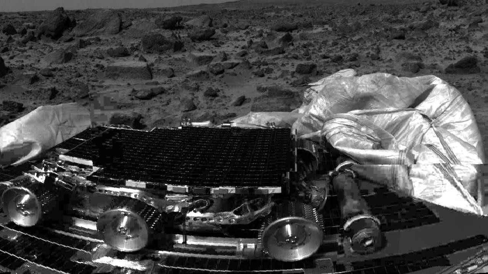
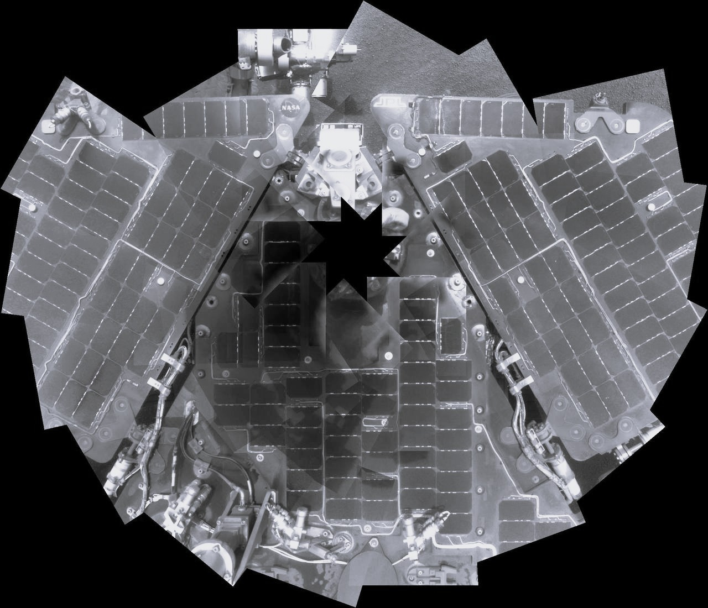

Meet the machines that explored the Moon and Mars, and discover the stories they have left behind.

A collection of scientific instruments that studied the Moon.

A robotic spacecraft that explored the lunar surface.

The first rover to explore the surface of Mars.

A rover that explored Mars for more than 14 years.
Forgotten Footprints tells the stories of NASA's machines left behind on the Moon and Mars. Explore their missions, discoveries and lasting contributions to space exploration.